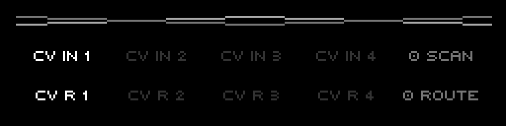
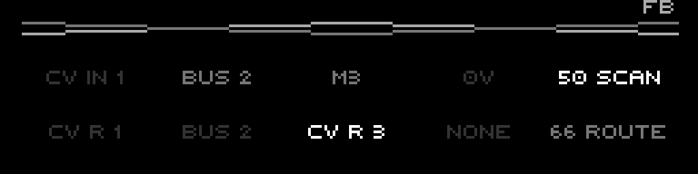

A 4-lane interpolating CV crossfader. Scan collapses four inputs to one signal; Route pans that signal across four outputs. Both controls morph continuously and are modulation targets.
The CV Router is a 4-lane interpolating CV crossfader/matrix — a Vostok-Trace-style patch point inside the firmware. It is not the parameter mod-matrix (that is the separate Routing subsystem with its own manual). The CV Router takes four CV inputs, collapses them to a single scanned signal with the Scan control, then steers that signal across the four output lanes with the Route control. Both controls interpolate continuously between adjacent lanes, so a slow turn morphs the signal from one lane to the next rather than switching abruptly.
Each lane picks its own input source (a physical CV in, a CV bus, a modulator, or 0V) and its own output destination (a physical CV out, a CV bus, or none). Scan and Route are themselves modulation targets, so the whole crossfade can be swept by the mod-matrix.
Everything here is grounded in the firmware as built — defaults, ranges, enum members, key bindings, and the evaluation math come from the model, engine, and UI code.
BusCv) — the internal shared CV rails that tracks, modulators, and this router can read and write.The router has exactly 4 lanes (CvRoute::LaneCount). A lane is one column in the matrix, carrying an input source (what feeds it) and an output destination (where its result goes).
The signal flow each frame is three stages:
Scan picks which input (or blend of two inputs) you hear; Route picks which output (or blend of two outputs) it lands on. With Scan and Route both at a lane's exact position, the router is a straight wire from that input lane to that output lane.
CvRoute for the whole project (Project::cvRoute()), holding the four input enums, the four output enums, and the Scan + Route values. The engine evaluates it once per frame in updateCvRouteOutputs(). It is not per-track and not per-pattern.Each lane's input is one InputSource enum, resolved to volts in updateCvRouteOutputs():
| Source | Volts fed to the lane | Notes |
|---|---|---|
CV in (CvIn) | physical CV input channel lane | the lane's matching hardware CV in |
BUS (Bus) | busCv(lane) — the CV bus rail for that lane | reads the shared internal CV rail |
M1..M8 (Mod1..Mod8) | modulator value mapped 0..127 → −5..+5V | a modulator engine output |
0V (Off) | constant 0.0V | silent lane |
n may only select the two modulators assigned to it: lane 0 offers M1/M2, lane 1 offers M3/M4, lane 2 offers M5/M6, lane 3 offers M7/M8 (modLane = modIndex / 2). The encoder walk skips any modulator that does not belong to the current lane. The engine itself can read any modulator, but the page will not let you set an off-lane one.| Destination | Behaviour |
|---|---|
CV R (CvOut) | lane result exposed via cvRouteOutput(lane), clamped to ±5V, routed to a physical CV out jack assigned to the router |
BUS (Bus) | lane result written to the CV bus rail (setBusCv) by the router writer; the lane's own cvRouteOutput reports 0V |
NONE (None) | lane muted — cvRouteOutput is 0V and nothing is written to the bus |
A lane reading from the bus while another lane writes to the bus forms a feedback loop through the shared rail. The page detects this — any lane with a Bus input and any lane with a Bus output present at once — and prints a small FB flag in the top-right corner as a warning.
Bus if that same lane already outputs to Bus, and refuses the reverse. The FB flag covers the cross-lane case, which the firmware still allows.CvRoute::clear() sets every lane to CV in → CV R (input CvIn, output CvOut), Scan 0, Route 0. Cleared, the router is four straight wires from CV in n to CV R n, with Scan/Route parked at lane 0.

The two big controls share the same interpolation idea: a 0..100 percentage is mapped onto the 0..3 lane axis, and the firmware blends the two lanes that bracket that position.
Scan is 0..100. The engine turns it into a lane position:
scanPos = (scan / 100) × 3 // 0.0 .. 3.0 across the four lanes
scanLow = floor(scanPos) // lower bracketing lane
scanHigh = ceil(scanPos) // upper bracketing lane
scanT = scanPos − scanLow // fractional blend amount
signal = inputs[scanLow] × (1 − scanT) + inputs[scanHigh] × scanTScan 0 is purely lane-0 input, Scan 100 is purely lane-3 input, Scan 50 is the midpoint between lane 1 and lane 2 (position 1.5). The result is a single scalar signal in volts — a continuous crossfade walking across the four inputs.
| Scan | Position | Result |
|---|---|---|
| 0 | 0.0 | lane 0 input alone |
| 33 | ~1.0 | lane 1 input alone |
| 50 | 1.5 | 50% lane 1 + 50% lane 2 |
| 66 | ~2.0 | lane 2 input alone |
| 100 | 3.0 | lane 3 input alone |
Route is also 0..100, mapped the same way to a 0..3 position, but instead of blending inputs it builds a weight for each output lane:
routePos = (route / 100) × 3
routeLow = floor(routePos)
routeHigh = ceil(routePos)
routeT = routePos − routeLow
if routeLow == routeHigh: // landed exactly on a lane
weights[routeLow] = 1.0
else:
weights[routeLow] = 1 − routeT // split between the two bracketing lanes
weights[routeHigh] = routeTEach output lane then emits signal × weights[lane]. At most two adjacent lanes are ever non-zero, so Route pans the scanned signal across the outputs: Route 0 sends it all to lane 0, Route 100 to lane 3, Route 50 splits it evenly between lanes 1 and 2.
| Param | Range | Default | Routable |
|---|---|---|---|
| Scan | 0..100 | 0 | yes (CvRouteScan) |
| Route | 0..100 | 0 | yes (CvRouteRoute) |
| Input source (per lane) | enum: CV in / Bus / 0V / M1..M8 | CV in | no |
| Output dest (per lane) | enum: CV R / Bus / None | CV R | no |
Routable<uint8_t> values: they hold a base (the value you edit on the page) and accept a routed override from the mod-matrix. scan() / route() return the mod-matrix override if one is active, otherwise the base. Editing on the page nudges the base, so the value moves cleanly even while a route is overriding it.The page is a compact 2×5 grid: a row of four input cells plus a Scan readout, over a row of four output cells plus a Route readout. There is no header or footer — instead a small "X" crossover logo sits at the top (two crossing line pairs), and the optional FB feedback flag appears top-right.
| Column | Row 1 (inputs) | Row 2 (outputs) |
|---|---|---|
| 1 | lane 0 input | lane 0 output |
| 2 | lane 1 input | lane 1 output |
| 3 | lane 2 input | lane 2 output |
| 4 | lane 3 input | lane 3 output |
| 5 | <scan> SCAN | <route> ROUTE |

FB flag warns of the bus loop.There is one combined selector. Pressing a function key sets the active column and toggles the edit row between Input and Output:
Tapping the same F-key twice walks from that lane's input to its output. The bright cell shows the current focus (active column, active row).
editScan).editRoute).cycleInput).cycleOutput).Shift (or pressing the encoder) makes the step 10 instead of 1 — for Scan/Route this jumps in tens; for the lane enums it advances ten positions. The enum cycle wraps and skips forbidden choices (off-lane modulators, same-lane Bus in+out conflicts).
Each input cell is tinted by where Scan currently sits; each output cell by where Route sits. The lane whose anchor matches the value exactly (lane 0 = 0, lane 1 = 33, lane 2 = 66, lane 3 = 100) is drawn Bright; lanes adjacent to the current interpolation position glow MediumBright as the blend crosses into them; the rest are dim. The focused cell (active column + row) always overrides to Bright.
Only Scan and Route are routing targets:
Routing::Target::CvRouteScan — label "CVR Scan".Routing::Target::CvRouteRoute — label "CVR Route".Add a route in the mod-matrix with one of these as the destination to sweep the crossfade from an LFO, an envelope, a CV in, or any other routing source. The lane input/output enums are not routable — only the two continuous controls are.
A lane's CvOut result only reaches hardware if a physical CV out channel is assigned to the router. In the engine, CV out channels whose owning "track" index equals CONFIG_TRACK_COUNT (the router pseudo-track) are mapped to router lanes in order (cvOutputCvRouteLane), and that lane's cvRouteOutput becomes the jack's base CV. Lanes set to Bus or None do not drive a jack directly — Bus writes the shared rail, None is silent.
To crossfade two oscillators' pitch CVs and send the blend to one output:
CVR Scan route from an LFO to auto-sweep the blend.To feed the blend onto the bus instead, set the output destination to BUS on the target lane and read that bus rail elsewhere — watch for the FB flag if any lane is also reading the bus.